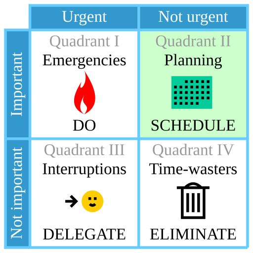

We all have twenty-four hours in a day, yet some people seem to achieve more at the same time than others. In a busy world, it can be difficult to juggle between work and personal life.
With effective time management, one can become more efficient at work (achieve more in less time), enabling more time for fun or relaxation. In this lesson, you will learn the basics of time management with methods that you can hopefully apply in your daily life.
Without further ado, let’s begin.
The Eisenhower matrix is a goal-setter method that splits up tasks into quadrants and uses the criteria important/unimportant and urgent/not urgent.
This method was derived from this quote by Dwight D. Eisenhower: “I have two kinds of problems, the urgent and the important. The urgent are not important, and the important are never urgent.”
“Try time blocking if you...
Handle multiple projects and responsibilities — like Jack Dorsey, founder of Square, who used day theming to run two major companies.
Spend too much time in “reactive mode” checking and responding to emails as they land in your inbox.
Find your day chopped up by back-to-back meetings, leaving you with the feeling that your day ends before it even starts.
Battle constant interruptions throughout the day with unexpected requests that disrupt your focus.
Struggle to find the time and mental space for big-picture thinking.”
Footer